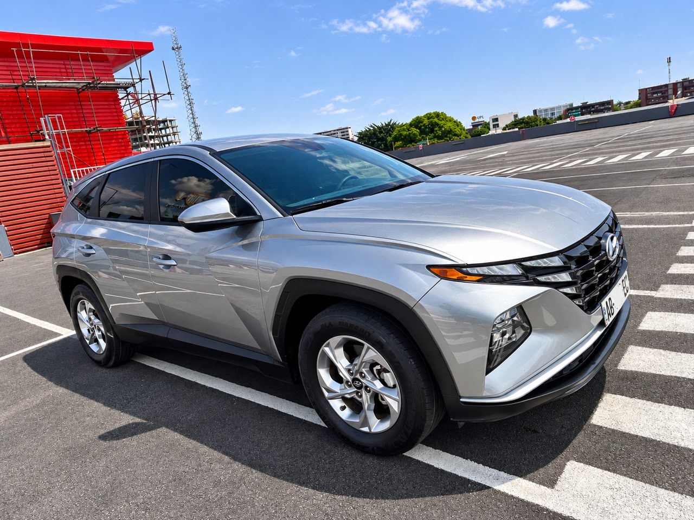

À vendre
Hyundai Tucson — modèle fin 2022 / 2023 gris
Essence 2 500 cm³ · 14 CV fiscaux · 52 000 miles (≈ 83 686 km)
17 800 000 FCFA
Modèle annoncéFin 2022 / 2023
Première mise en circulation15/07/2022
MotorisationEssence
Cylindrée2 500 cm³
Puissance fiscale14 CV
Places5
Portes4
Kilométrage52 000 miles (≈ 83 686 km)
UsagePrivé
SUV spacieux et confortable. Véhicule importé · Première visite · Papiers à jour selon le vendeur.